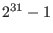

Next: C Parameter Examples Up: Parameters Previous: ZeroObjNodes
While the meanings of the various Gurobi parameters remain constant between the different language API's, the methods used to query or modify them vary. Refer to the following sections for detailed examples of how to work with parameters from our various API's:
You can also browse our Examples to get a better sense of how to use our parameter interface.
One important note about integer-valued parameters: while the maximum
value that can be stored in a signed integer is , we use a
MAXINT value of 2,000,000,000. Attempting to set an integer
parameter to a value larger than this maximum will produce an error.